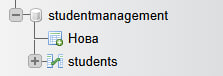
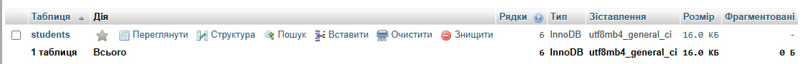
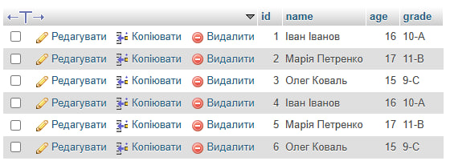
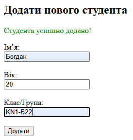
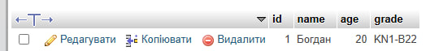
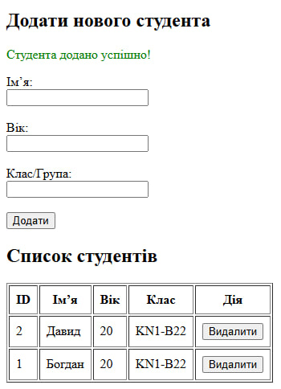
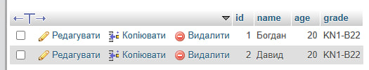
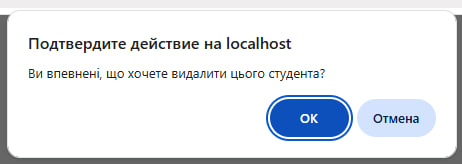

Тема: Взаємодія з MySQL. CRUD операції.
Виконавець: Старенький Богдан Сергійович
Група: KN1-B22
Створити базу даних "StudentManagement" та таблицю "Students" зі стовпцями: id, name, age, grade.
Переглянути розв’язок   Реалізувати сторінку для додавання нового студента до бази даних із використанням форми HTML та операції INSERT.
Переглянути розв’язок  Створити сторінку для відображення списку студентів, доданих до бази даних, з можливістю видалення запису.
Переглянути розв’язок   